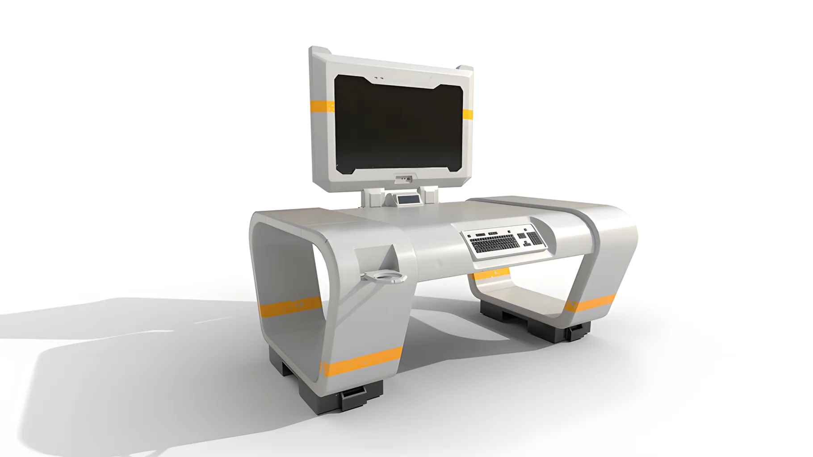
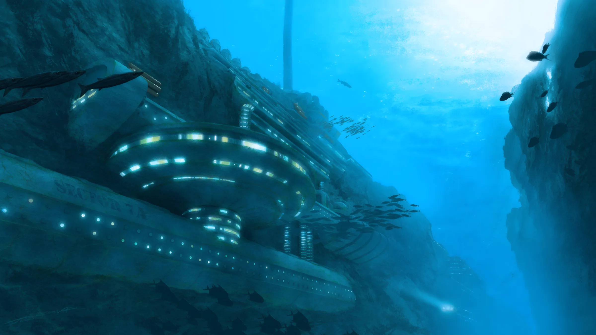
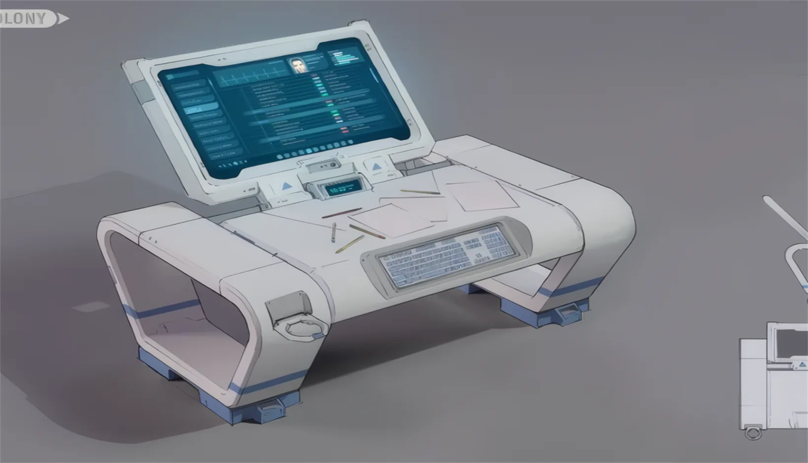
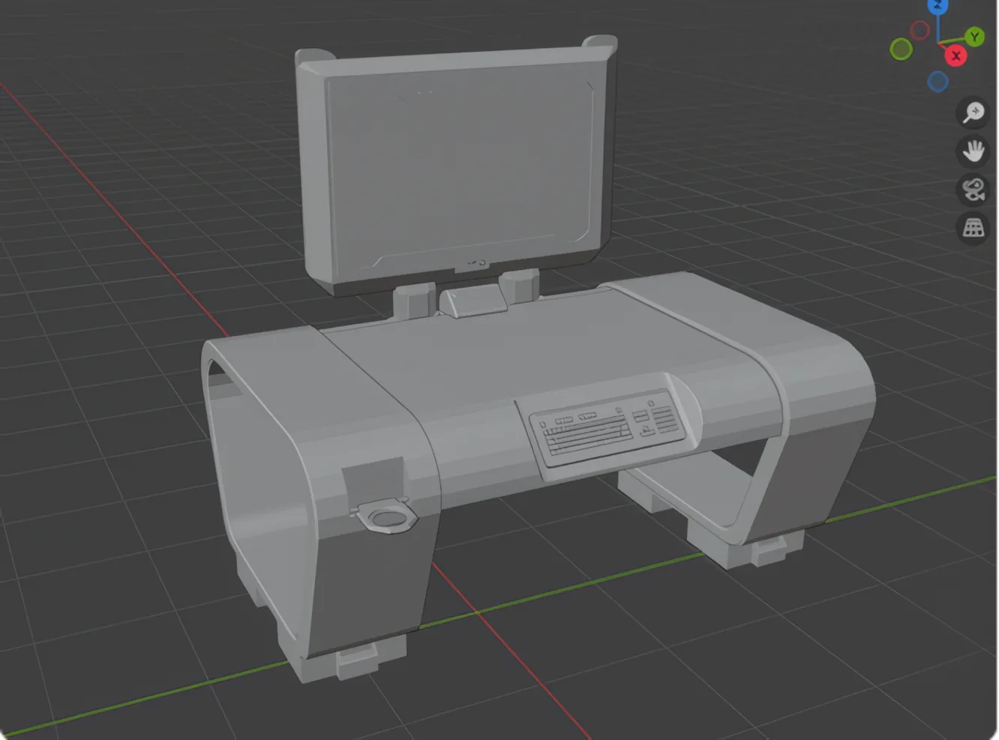
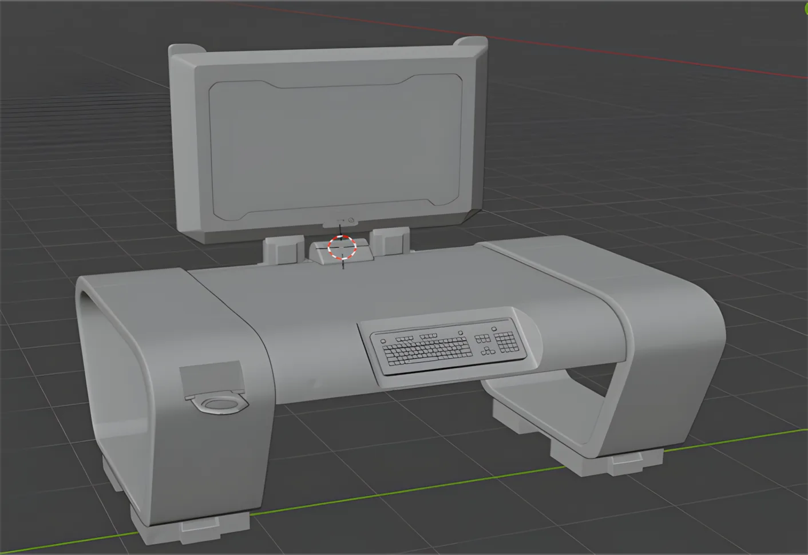
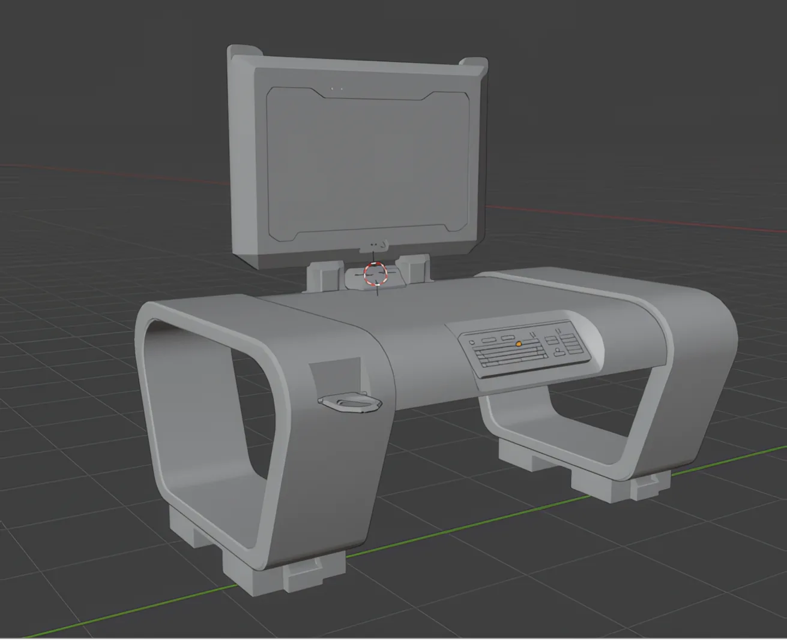
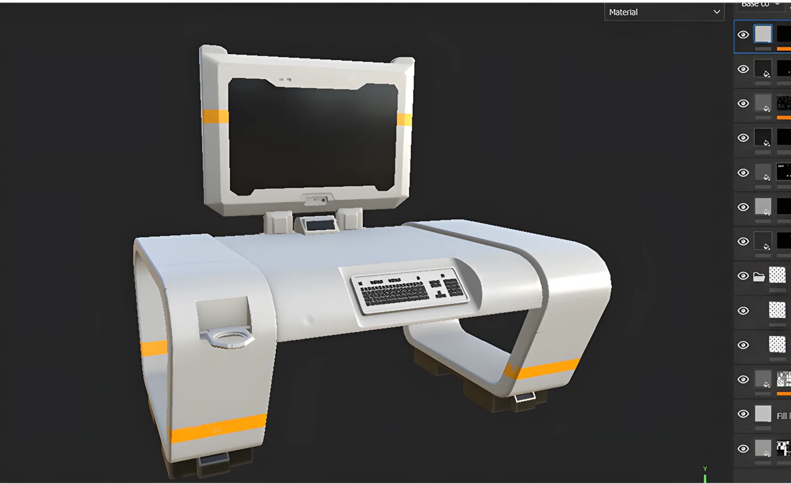
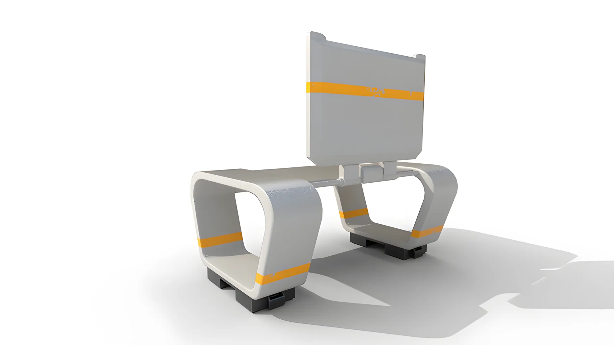

Стол SCI-FI
Проект родился как упражнение в создании предмета для фантастической среды. Я хотел собрать объект, который выглядит функционально, но при этом сохраняет характер промышленного дизайна: строгие панели, технические вставки и акцентные детали.


Подбор референсов
Сначала я собрал визуальные референсы sci-fi объектов и рабочих станций. Они помогли задать язык формы: крупные модули, плавные фаски, технические панели и оранжевые акценты.
Драфт и блокинг
На первом этапе я собрал силуэт из простых объемов, чтобы быстро проверить пропорции и посадку формы. Такой блокинг помогает увидеть, где объект выглядит тяжелым, а где ему не хватает опоры.


Скульптинг и детализация
После утверждения формы я добавил панели, фаски, углубления и мелкие технические элементы. Детализация нужна не ради перегруза, а чтобы предмет выглядел собранным и убедительным.
Low poly модель
Следующим шагом стала низкополигональная версия. Я очистил геометрию, сохранил читаемые силуэты и подготовил объект к дальнейшему текстурированию.


Запекание и текстуры
Финальный вид появился после запекания карт и работы с материалами. Я оставил светлую основу, металлические зоны и оранжевые акценты, чтобы модель воспринималась как часть sci-fi интерфейса.

Есть похожая задача?